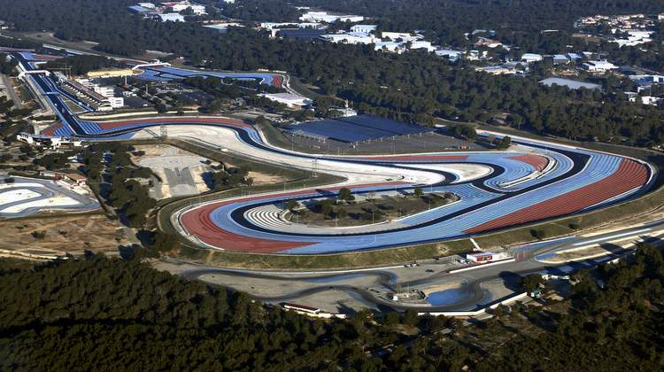

FRENCH GRAND PRIX
Cicuit Length:
5.842km (3.630 mi)
Turns:
20
Number of Laps:
53
First Grand Prix:
1971
Race Distance:
309.69 km
French's race takes place in Le Castellet. Paris is the capital of France,
about 2,1 Million people live in Paris. And across France live about 66,9 Million inhabitants. So far the record holder
of this circuit is Sebastian Vettel. This year (2021) the race will be on June 27. The fastest speed last year (2019) was measured at 325 km/h.
The French Grand Prix is often the eigth event of the Formula 1 of the Calendar year.
Winners of the Frech GP
2020 - Canceled due to Corona
2019 - Lewis Hamilton
2018 - Lewis Hamilton
2017 - Not Held
2016 - Not Held
2015 - Not Held
2014 - Not Held
2013 - Not Held
2012 - Not Held
2011 - Not Held
2010 - Not Held
2009 - Not Held
2008 - Felipe Massa
2007 - Kimi Räikkönen